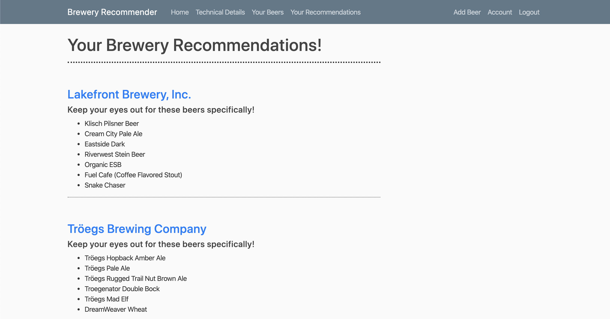
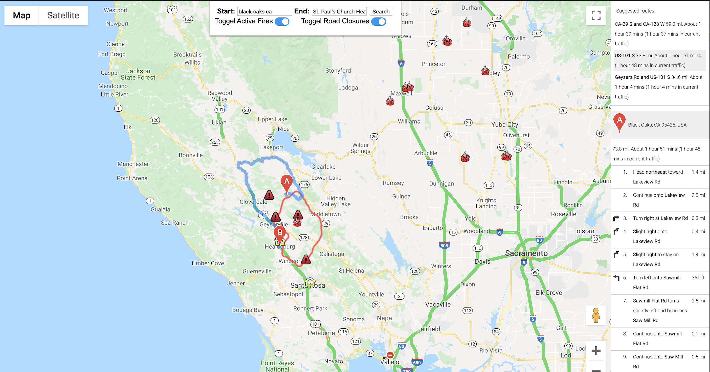
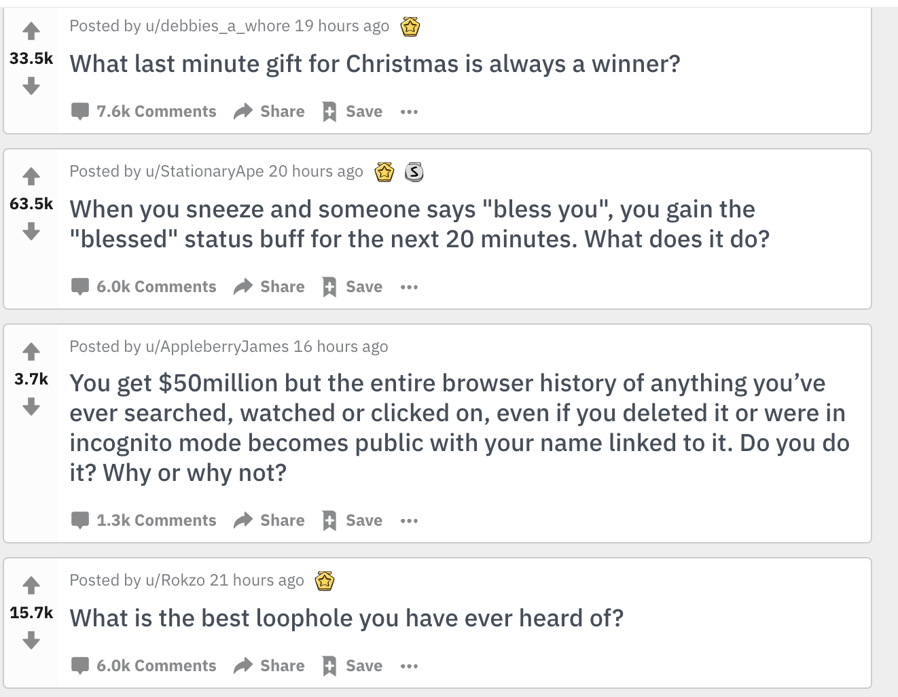

Robert
"Wilson"
Stewart
Data Scientist with MS in physics and experience in research. I am skilled at tackling and completing complex problems through an analytical lens. I look forward to using data to provide critical insights and solve real-world problems.
Click Below to Download a Copy of My Resume

Experience
Data Science Immersive Bootcamp Student
- Completed 22 labs and 6 long-form projects over 12 weeks.
- Learned how to use data science to solve real worl problems.
- Became skilled in Python, NumPy, Pandas, SciPy, SciKit-Learn, Matplotlib, Seaborn, Git, SQL, Keras, and Tensorflow.
- Projects
- Brewery Recommender
- Built an item based collaborative recommender system to give brewery recommendations based on a user's beer preferences.
- Used over 1.5 million reviews from 1995-2011 with over 50,000 unique beers.
- Utilized Flask to create an application to give users their recommendations
- Optimizing Evacuation Routes
- Used Google Maps API and social media to build a real-time model to optimize evacuation routes during natural disasters.
- Subreddit Post Binary Classifier
- I examined 2 subreddits, and used binary classification with NLP to identify which subreddit a unique post came from.
- My best model was fit with a Complement Naive Bayes classifier with a test accuracy score of %92.59
- Brewery Recommender
High School Physics Teacher
- Designed and organized curriculum for 130 students across five classes.
- Maintained an engaged and disciplined student-centered learning environment.
Graduate Teaching Assistant
- Worked alongside a professor in a collaborative classroom environment.
- Graded laboratory reports, weekly quizzes, workbooks, and exams for 80 student classes.
Manager
- Structured price accuracy workload each week for 10 price accuracy team members.
- Reorganized the structure of team member assignments to promote efficiency and increase sales.
Projects
Brewery Recommender
- Built an item based collaborative recommender system to give brewery recommendations based on a user's beer preferences.
- Used over 1.5 million reviews from 1995-2011 with over 50,000 unique beers.
- Utilized Flask to create an app to give users their recommendations
- Here is a screenshot of the most similar breweries along with the
most similar beers at those breweries

Optimizing Evacuation Routes
- Used Google Maps API and social media to build a real-time model to optimize evacuation routes during natural disasters.
- Below is a screenshot of the application we built for real-time
route detection

Subreddit Post Binary Classifier
- I examined 2 subreddits, and used binary classification with NLP to identify which subreddit a unique post came from.
- My best model was fit with a Complement Naive Bayes classifier with a test accuracy score of %92.59
- Here's an example of some posts my model was trying to predict:

Education
General Assembly
The George Washington University
Saint Mary's College of California
Skills
Interests
Data science is my career as well as one of my hobbies. I have always loved looking at data and figuring out a story based on numerical evidence. One thing I enjoy studying is trends in baseball. Right now I am building a model to predict which players will become Hall-of-Famers based on historical factors.
When I'm not doing data science, I love spending my time in the wilderness hiking and exploring beautiful and untouched parts of the world. I also enjoy playing sports such as basketball, baseball, and tennis. When I'm not outside I spend a lot of my time reading books and playing board games.